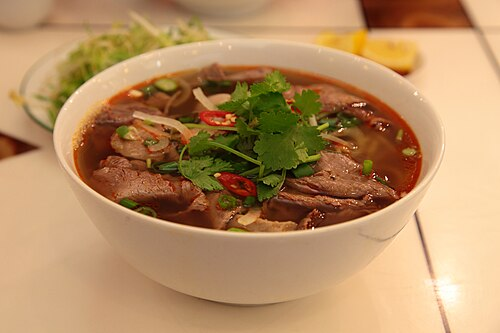
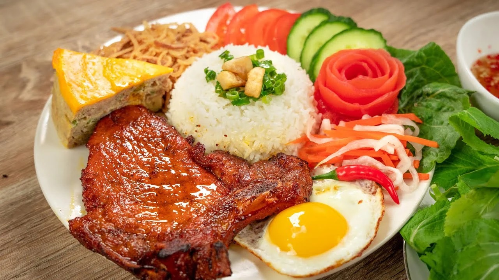
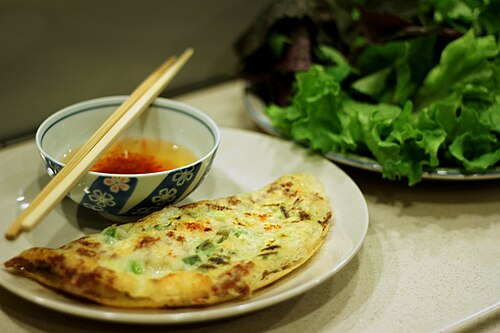
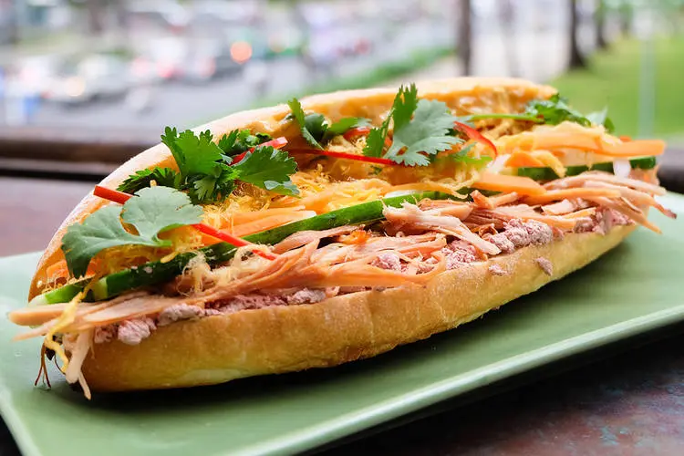

Phở Bò Hà Nội
Món ăn quốc hồn quốc túy với nước dùng đậm đà từ xương ống và thảo mộc.
Thưởng thức hương vị đậm đà đại diện cho tinh hoa ẩm thực Bắc - Trung - Nam.
Món ăn quốc hồn quốc túy với nước dùng đậm đà từ xương ống và thảo mộc.

Hương vị cay nồng đặc trưng miền Trung với mùi sả và mắm ruốc thơm lừng.

Món ăn bình dân đặc trưng Nam Bộ ăn kèm sườn nướng óng ánh và nước mắm chua ngọt.

Vỏ bánh vàng ươm giòn tan cuộn cùng rau rừng và nước chấm tỏi ớt.

Sự kết hợp hoàn hảo giữa vỏ bánh giòn xốp và nhân thịt, pate, bơ béo ngậy.